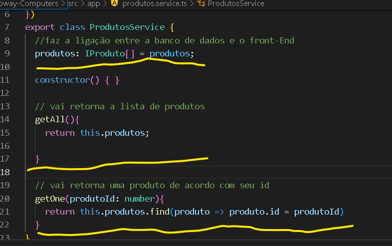
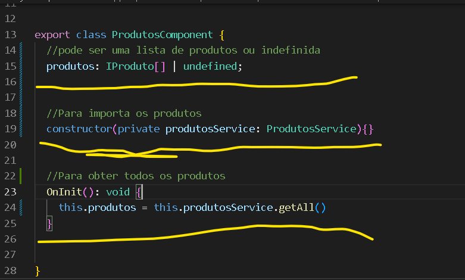
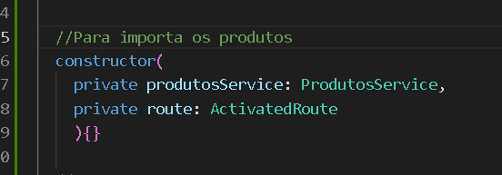
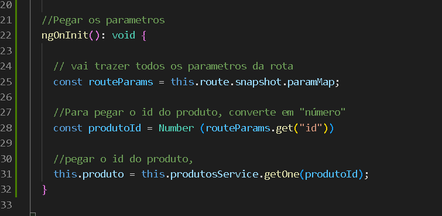
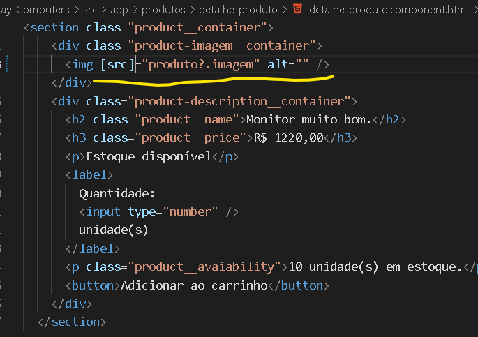
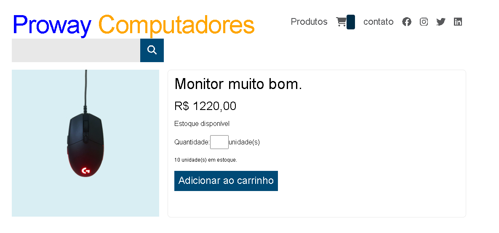
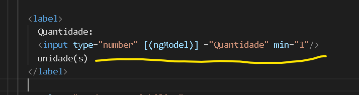
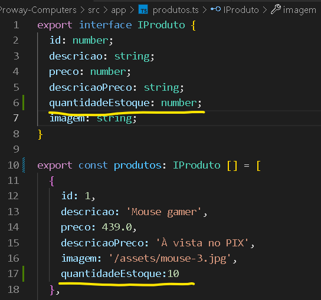

Service produto
Para fazer a ligação entre o banco de dados e o front-End.
Crie um novo componente, usando o comando ng g servide produtos, ele que terá acesso ao "banco de dados".
Vai no componente produtos.service.ts, cria uma propriedade, que fará esse acesso ao "banco de dados",
será assim: " produto: IProduto[] = produtos ",
Crie também dois métodos:
getAll para retorna a lista de produtos.
getOne vai retorna o produto de acordo com o seu "id".
Veja como fica, por enquanto na imagem abaixo:

Agora vamos ultilizar os métodos que criamos:
Ao invés de importa diretamente vamos ultilizar o "service" para importa os dados,
dizendo ao programa que pode ser uma lista de produtos ou indefinida.
Vá no componenteprodutos.component.ts, e modifique as propriedades que já foram criadas lá:
coloque desse jeito produtos: IProduto[] | undefined
Depois para fazer a importação dos produtos, vai no construtor e coloca assim:
constructor ( private produtosService : ProdutosService) { }
Esse comando será responsável por importa os produtos.
Depois faremos o "OnInit", método que será iniciado e retornará a lista de produtos,
o comando seria esse :
OnInit(): void {
__this.produtos = this.produtosService.getAll()
Veja como fica o código, na imagem abaixo:

Agora vamos implementar o "detalhe de produto", abra o componente detalhe-produto.component.ts
Crie um método "construtor", para poder pegar a lista de produtos usando o "service" e a rota.
Adiciona na classe o construtor,e como paramentro, você coloca:
O código seria como esse na imagem:

private produtosService: ProdutosService que é para poder usar o bannco de dados.
private route: ActivatedRoute para você pode usar o serviço de rota
Cria uma propriedade com esse nome "produto: IProduto | undefined ;"
Crie um método, que será inicializado junto com o programa, como está na imagem abaixo:

const routeParams = this.route.snapshot.paramMap; vai trazer todos os paramentros da rota.
const produtoId = Number (routeParams.get("id")), para pegar o produto de acordo com seu id, se for um número
this.produto = this.produtosService.getOne(produtoId);, vai obter o produto de acordo com o id
Agora basta modificar o template, que está no componente detalhe-produto.component.html.
Primeiro vamos modificar a imagem do produto, pelo texto produto?.imagem.
No código fica assim, como na imagem abaixo:

E na página vai mudar a imagem, e ficará como na imagem abaixo:

Agora modifica o "h2", para puxar da base de dados o nome e descrição do produto,
ao invés da descrição, escreva isso no lugar {{ produto?.descricao }}
Agora modifica o "h3" também, para puxar da base de dados, o preço do produto,
ao invés da descrição, escreva isso no lugar {{ produto?.preco }}
Agora para mudar a quantidade , vai no componentedetalhe-produto.component.ts,
adiciona a propriedade "Quantidade = 1;", ela já vai sempre iniciar valendo "1".
Vai no componente produtos.module.ts, e na parte de importação acrescente FormsModule.
Para poder trabalhar com o "ngModel", dentro do componente "produtos".
Agora vai no componente detalhe-produto.component.html, e acrescenta o "ngModel" na tag "Input",
coloque assim dentro da tag [(ngModel)] ="quantidade" min="1", já vai acrescenta uma valor minímo.

Agora, UNIDADES EM ESTOQUE, para criar essa parte, você vai no produtos.ts,
acrescenta a propriedade "quantidadeEstoque: number", depois
Colocar em todos os produtos com o valor, quantidadeEstoque: 10 desse jeito.
Como na imagem abaixo:

Prontinho essa parte já finalizamos!
Veja como fica a página de detalhes do produto, na imagem abaixo:
Prontinho, a ligação entre o banco de dados e o front-end, foi criado.